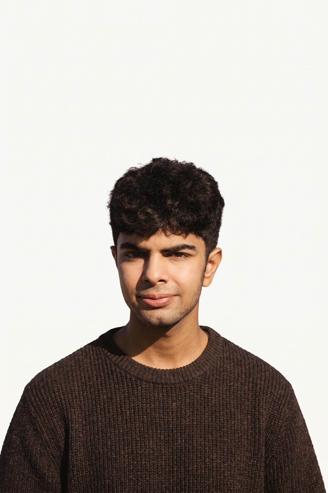

02 / THE PERSON
A little more
human.
No heroic origin story. Just an engineering student figuring out which problems are worth solving.

FIG. 02 / OUTSIDE THE EDITORCuriosity is
the constant.
I’m Abdul Hadi, a computer engineering student from Pakistan, currently on academic exchange at EPITECH Paris.
My interests sit at the meeting point of software and the physical world: artificial intelligence, computer vision, robotics, and systems that actually interact with people.
I like projects that force me to learn something unfamiliar, whether that means a framework, a model, or a better way to communicate an idea.
Places that
shape the work.
EPITECH Paris
Digital Innovation Track · Academic exchange
Programming, web development, collaborative projects, and working with people from different disciplines.
FAST-NUCES
BS Computer Engineering
Foundations in mathematics, programming, computer systems, and electronics.
Things I use.
Things I’m learning.
Languages
Python, C++, JavaScript, TypeScript
Interfaces
HTML, CSS, React, Three.js
Intelligent systems
OpenCV, YOLO, AI agent evaluation
Workflow
Git, GitHub, Linux, Docker
A tool appearing here means I've used or explored it, not that I claim equal mastery of every item.